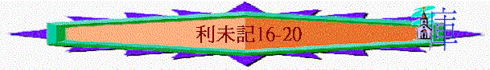

|
與神同住的人生──要聖潔(分別為聖歸於神) |
||||
|
人的奉獻--要蒙神悅納 |
人的生活--要分別出來 |
人的事奉--要尊神為聖 |
人的日子--要記念真神 |
人的產業--要歸神為聖 |
|
１－１０ |
１１－２０ |
２１－２２ |
２３－２４ |
２５－２７ |
二.人的生活──要分別出來(11-20)
1.在飲食上要分別出來(11)
2.在身子上要潔淨除污(12-15)
3.在全民中要贖罪求赦(16)
＊關乎亞倫每年一次入到至聖所為百姓行贖罪之禮
＊來9講述贖罪日之禮，預言將來更美祭司基督救恩之工作
＊從16章內容看到很多關乎救贖，救恩之內容
A.贖罪的日子
「每逢
「他要在至聖所和會幕與壇行贖罪之禮，並要為眾祭司和會眾的百姓贖罪。這要作你們永遠的定例，就是因以色列人一切的罪，要一年一次為他們贖罪。」於是，亞倫照耶和華所吩咐摩西的行了。」利16:33-34
「我們憑這旨意，靠耶穌基督，只一次獻上他的身體，就得以成聖。」來10:10
～
～每年也需要做的，目的是為眾祭司及全會眾贖罪
～但基督只要一次獻上，就成就了贖罪，不需要每年的獻上
B.贖罪的中保
→ 亞倫一人承擔
「他進聖所贖罪的時候，會幕裡不可有人，直等到他為自己和本家並以色列全會眾贖了罪出來。」16:17
「因為只有一位神，在神和人中間，只有一位中保，乃是降世為人的基督耶穌；」提前2:5
～在贖罪日，只有大祭司一人行贖罪之禮，一人走入至聖所，他獨力承擔行贖罪禮之工作，正如基督也是一人為我們承擔眾人的罪。
C.贖罪的程序
(1)除掉華麗的衣服
「要穿上細麻布聖內袍，把細麻布褲子穿在身上，腰束細麻布帶子，頭戴細麻布冠冕；這都是聖服。他要用水洗身，然後穿戴。」利16:4
～大祭司穿上華美聖衣，獻上每天早晨常獻的燔祭和素祭(出29:38-41)，之後除掉華麗的衣服之前，用水洗身，然後穿上四件細麻布衣服
(2)按手在公牛頭上
「亞倫要把贖罪祭的公牛奉上，為自己和本家贖罪；」利16:6
～按手在公牛犢上承認自己及眾祭司的罪
(3)把公牛犢宰殺了
「亞倫要把贖罪祭的公牛牽來宰了，為自己和本家贖罪；」利16:11
(4)拿香爐盛滿火炭
「拿香爐，從耶和華面前的壇上盛滿火炭，又拿一捧搗細的香料，都帶入幔子內，」利16:12
(5)拿香料入至聖所
「拿香爐，從耶和華面前的壇上盛滿火炭，又拿一捧搗細的香料，都帶入幔子內，」16:12
(6)把香料放在火上
「在耶和華面前，把香放在火上，使香的煙雲遮掩法櫃上的施恩座，免得他死亡；」利16:13
「所以，我們只管坦然無懼的來到施恩的寶座前，為要得憐恤，蒙恩惠，作隨時的幫助。」來4:16
「他既拿了書卷，四活物和二十四位長老就俯伏在羔羊面前，各拿著琴和盛滿了香的金爐；這香就是眾聖徒的祈禱。」啟5:8
(7)香的煙充滿聖所
～將香放在火上，使香的煙雲遮蓋施恩座，避免大祭司直按看到施恩座而死亡
～今日香也代表祈禱，我們的祈禱也如香一樣，可直達施恩座，得蒙恩惠
(8)出院取公牛的血
「也要取些公牛的血，用指頭彈在施恩座的東面，又在施恩座的前面彈血七次。」16:14
(9)再次進入至聖所
(10)在施恩座前彈血
～東面上彈1次(用指頭)，在施恩座地上彈血7次
(11)出聖所宰公山羊(為百姓作贖罪祭)
「隨後他要宰那為百姓作贖罪祭的公山羊，把羊的血帶入幔子內，彈在施恩座的上面和前面，好像彈公牛的血一樣。」16:15
(12)盛所宰公山羊血
(13)再次進入至聖所
(14)在施恩座前彈血
～把公山羊的血彈在施恩座的東面和前面，如同彈公牛血的一樣
(15)用祭牲血抹香壇
「他因以色列人諸般的污穢、過犯，就是他們一切的罪愆，當這樣在聖所行贖罪之禮，並因會幕在他們污穢之中，也要照樣而行。」16:16
「亞倫一年一次要在壇的角上行贖罪之禮。他一年一次要用贖罪祭牲的血在壇上行贖罪之禮，作為世世代代的定例。這壇在耶和華面前為至聖。」出30:10
(16)出會幕用血抹壇
「他出來，要到耶和華面前的壇那裡，在壇上行贖罪之禮，又要取些公牛的血和公山羊的血，抹在壇上四角的周圍；也要用指頭把血彈在壇上七次，潔淨了壇，從壇上除掉以色列人諸般的污穢，使壇成聖。」」16:18-19
～用公牛和公山羊攙合的血抺在燔祭壇上，其餘倒在壇邊
(17)活的公山羊奉上
「亞倫為聖所和會幕並壇獻完了贖罪祭，就要把那隻活著的公山羊奉上。兩手按在羊頭上，承認以色列人諸般的罪孽過犯，就是他們一切的罪愆，把這罪都歸在羊的頭上，藉著所派之人的手，送到曠野去。」16:20-21
～用雨隻手按在羊頭上，承認以色列人諸般的罪孽
(18)把羊送到曠野去
「要把這羊放在曠野，這羊要擔當他們一切的罪孽，帶到無人之地。」16:22
(19)牛羊脂油放皿中
「作贖罪祭的公牛和公山羊的血既帶入聖所贖罪，這牛羊就要搬到營外，將皮、肉、糞用火焚燒。」16:27
～公牛和公山羊的脂油放在器皿裡，預備燒在壇上
(20)其餘的燒在營外
「焚燒的人要洗衣服，用水洗身，然後進營。」16:28
(21)脫麻衣而穿聖服
「亞倫要進會幕，把他進聖所時所穿的細麻布衣服脫下，放在那裡，又要在聖處用水洗身，穿上衣服，出來，把自己的燔祭和百姓的燔祭獻上，為自己和百姓贖罪。」16:23-24
～大祭司就要脫下細麻布衣服及洗身，再穿上華美衣服
(22)獻公綿羊為燔祭
～大祭司為自己和會眾獻上兩隻公綿羊為燔祭
(23)贖罪祭脂油全燒
「贖罪祭牲的脂油要在壇上焚燒。」16:25
(24)獻上另外的燔祭
「
民29:7-8
～獻上1隻牛公犢、1隻公綿羊，七隻一歲公綿羊為燔祭
(25)獻公山羊贖罪祭
「又獻一隻公山羊為贖罪祭。這是在贖罪祭和常獻的燔祭，與同獻的素祭並同獻的奠祭以外。」民29:11
～可能是為本節期之禮節上的錯誤贖罪
D.贖罪的祭牲
|
祭 |
祭
牲 |
隻數 |
|
大祭司的贖罪祭 |
公牛犢 |
1 |
|
會眾的贖罪祭 |
公山羊 公山羊(送到曠野) |
1 1 |
|
大祭司的燔祭 |
公綿羊 |
1 |
|
會眾的燔祭 |
公綿羊 |
1 |
|
會眾的另外燔祭 |
公牛犢 公綿羊 一歲的綿羊羔 |
1 1 7 |
|
另外的贖罪祭 |
公山羊 |
1 |
E.贖罪的果效→可用三羊的表明
a.一隻公山羊的灑血
(1)除掉諸罪
「隨後他要宰那為百姓作贖罪祭的公山羊，把羊的血帶入幔子內，彈在施恩座的上面和前面，好像彈公牛的血一樣。」利16:15
「也要用指頭把血彈在壇上七次，潔淨了壇，從壇上除掉以色列人諸般的污穢，使壇成聖。」利16：19
(2)除掉隔阻
血→彈在施恩座上面和前面(相交之路)
血→抹在壇四角，及彈七次(奉獻之路)
b.一隻公山羊的放走
＊罪的遠離(阿撒瀉勒---移去的意思)
「亞倫為聖所和會幕並壇獻完了贖罪祭，就要把那隻活著的公山羊奉上。兩手按在羊頭上，承認以色列人諸般的罪孽過犯，就是他們一切的罪愆，把這罪都歸在羊的頭上，藉著所派之人的手，送到曠野去。要把這羊放在曠野，這羊要擔當他們一切的罪孽，帶到無人之地。」16：20-22
～羊的放走，代表已遠離人了，罪已移去了！
c.一隻公綿羊的焚燒
＊徹底消毀
「亞倫要進會幕，把他進聖所時所穿的細麻布衣服脫下，放在那裡，又要在聖處用水洗身，穿上衣服，出來，把自己的燔祭和百姓的燔祭獻上，為自己和百姓贖罪。贖罪祭牲的脂油要在壇上焚燒。」16：23-25
「作贖罪祭的公牛和公山羊的血既帶入聖所贖罪，這牛羊就要搬到營外，將皮、肉、糞用火焚燒。」16：27
F.贖罪的百姓
a.用力自醒
「每逢
b.克苦己心
「這日你們要守為聖安息日，要刻苦己心；這為永遠的定例。」16:31
4.在宰牲上要獨尊真神(17)
～關乎宰牲畜之例
A.尊重獨一的真神
a.尊敬真神
「凡以色列家中的人宰公牛，或是綿羊羔，或是山羊，不拘宰於營內營外，若未曾牽到會幕門口、耶和華的帳幕前獻給耶和華為供物，流血的罪必歸到那人身上。他流了血，要從民中剪除。」17:3-4
「耶和華你神所選擇要立他名的地方若離你太遠，就可以照我所吩咐的，將耶和華賜給你的牛羊取些宰了，可以隨心所欲在你城裡吃。」申12:21
～以色列人無論在營外或營內，不可吃沒有在神面前獻上的公牛、綿羊羔、山羊
～若要吃，必須先作平安祭，先尊敬獨一的神，當然以色列人在曠野不是日日吃肉的，他們有嗎哪吃的，但在一些特別日子，他們會吃肉的
～當以色列民去到迦南後，他們則可以自由吃肉了！
b.慎拜別神
「他們不可再獻祭給他們行邪淫所隨從的鬼魔（原文作公山羊）；這要作他們世世代代永遠的定例。」17:7
～要先將牛、羊帶到神面前，也有另一目的是慎防他們在別處獻祭給鬼神
B.尊重寶的生命
a.不吃血的含意
「因為活物的生命是在血中。我把這血賜給你們，可以在壇上為你們的生命贖罪；因血裡有生命，所以能贖罪。」17:11
「論到一切活物的生命，就在血中。所以我對以色列人說：無論什麼活物的血，你們都不可吃，因為一切活物的血就是他的生命。凡吃了血的，必被剪除。」17:14
(1)血代表生命
～人當尊重生命，勿流人的血，不吃血就能表達此事！
(2)血只是用作贖罪
～人不吃血時，會想起血就是生命，人的生命是有罪的，唯有用血作贖罪
b.處理血的方法
(1)打臘所得的活物
「凡以色列人，或是寄居在他們中間的外人，若打獵得了可吃的禽獸，必放出他的血來，用土掩蓋。」17:13
～要放盡牠的血，用土掩蓋
(2)自死或是被野獸撕裂的
「凡吃自死的，或是被野獸撕裂的，無論是本地人，是寄居的，必不潔淨到晚上，都要洗衣服，用水洗身，到了晚上才為潔淨。但他若不洗衣服，也不洗身，就必擔當他的罪孽。」17:15-16
～因沒有放血，沒有好好處理血的問題，所以不能吃，誤吃了必不潔淨，要洗衣服及洗身子
5.在行為上不效法外邦(18-20)
「你們從前住的埃及地，那裡人的行為，你們不可效法，我要領你們到的迦南地，那裡人的行為也不可效法，也不可照他們的惡俗行。」18：3
～18-20題及許多「不可」事情，當以色列人遇到迦南人之後，不可效法他們的惡俗
A.不效法的原因
a.真神的主權
「你曉諭以色列人說：我是耶和華你們的神。」18:2
「所以，你們要守我所吩咐的，免得你們隨從那些可憎的惡俗，就是在你們以先的人所常行的，以致玷污了自己。我是耶和華你們的神。」18：30
～因神是他們的神，神吩咐他們不效法，他們理應聽從
b.惡俗的可憎
「所以，你們要守我所吩咐的，免得你們隨從那些可憎的惡俗，就是在你們以先的人所常行的，以致玷污了自己。我是耶和華你們的神。」18：30
「不可與獸淫合，玷污自己。女人也不可站在獸前，與他淫合；這本是逆性的事。」18：23
～這些風俗是惡的，有逆性的事，是可憎及違反常理的
c.選民的特質
「你們要歸我為聖，因為我耶和華是聖的，並叫你們與萬民有分別，使你們作我的民。」20：26
「在這一切的事上，你們都不可玷污自己；因為我在你們面前所逐出的列邦，在這一切的事上玷污了自己。」18：24
～選民是聖潔的，所以勿被惡俗玷污自己
d.歷史的鑑戒
「在這一切的事上，你們都不可玷污自己；因為我在你們面前所逐出的列邦，在這一切的事上玷污了自己。」18：24
「免得你們玷污那地的時候，地就把你們吐出，像吐出在你們以先的國民一樣。」18：28
～在歷史中，外邦人曾行了很多神眼中看為惡的事，曾懲罰所多瑪、俄摩拉，也用災禍攻擊迦南人，所以苦以色民若行惡，地也可將他們吐出來！
B.不效法的風俗
a.亂倫的事
「你們都不可露骨肉之親的下體，親近他們。我是耶和華。不可露你母親的下體，羞辱了你父親。他是你的母親，不可露他的下體。不可露你繼母的下體；這本是你父親的下體。你的姊妹，不拘是異母同父的，是異父同母的，無論是生在家生在外的，都不可露他們的下體。」18：6-9
～在歷史中，流便、押沙龍也犯了此罪，受神的審判！
b.淫亂的事
「不可與鄰舍的妻行淫，玷污自己。不可使你的兒女經火歸與摩洛，也不可褻瀆你神的名。我是耶和華。」18：20-21
～不單是屬地的淫亂，屬靈的淫亂也不可，將自己的兒女獻給摩洛是看為可恥的事！
c.逆性的事
「女人行經不潔淨的時候，不可露他的下體，與他親近。」18：19
「不可與男人苟合，像與女人一樣；這本是可憎惡的。不可與獸淫合，玷污自己。女人也不可站在獸前，與他淫合；這本是逆性的事。」18：22-23
C.當持守的樣式
a.敬畏神
「．．．．又要敬畏你的神，我是耶和華」
(1)孝敬神所設立的父母
「你們各人都當孝敬父母，也要守我的安息日。我是耶和華你們的神。」19:3
～人敬畏神時，也要敬重神所揀選的父母
(2)敬畏全地獨一的真神
「你們不可偏向虛無的神，也不可為自己鑄造神像。我是耶和華你們的神。」19：4
「你們不可吃帶血的物；不可用法術，也不可觀兆。」19：26
(3)敬重分別出來的日子
「你們要守我的安息日，敬我的聖所。我是耶和華。」19：30
(4)敬重分別出來的聖所
「你們要守我的安息日，敬我的聖所。我是耶和華。」19：30
(5)敬重分別出來的身體
「頭的周圍不可剃，鬍鬚的周圍也不可損壞。」19：27
～有拜偶像的人剃頭的周圍，先留頂上頭髪，另外也有人用自己看為珍貴的鬍鬚獻給假神
(6)敬重分別出來的聖物
「你們獻平安祭給耶和華的時候，要獻得可蒙悅納。這祭物要在獻的那一天和第二天吃，若有剩到第三天的，就必用火焚燒。第三天若再吃，這就為可憎惡的，必不蒙悅納。凡吃的人必擔當他的罪孽；因為他褻瀆了耶和華的聖物，那人必從民中剪除。」19：5-8
b.愛別人
(1)愛鄰舍
(A)不欺負人
「不可欺壓你的鄰舍，也不可搶奪他的物。雇工人的工價，不可在你那裡過夜，留到早晨。不可咒罵聾子，也不可將絆腳石放在瞎子面前，只要敬畏你的神。我是耶和華。」19：13-14
(B)不恨怨人
「不可心裡恨你的弟兄；總要指摘你的鄰舍，免得因他擔罪。不可報仇，也不可埋怨你本國的子民，卻要愛人如己。我是耶和華。」19：17-18
～恨不能建立人，惟有用愛心說誠實話，對方作了惡，用言語挽回他，愛對方如自己一樣，才能建立
(2)愛長者
「在白髮的人面前，你要站起來；也要尊敬老人，又要敬畏你的神。我是耶和華。」19：32
(3)愛外人
「若有外人在你們國中和你同居，就不可欺負他。和你們同居的外人，你們要看他如本地人一樣，並要愛他如己，因為你們在埃及地也作」19：33-34
c.行公義
(1)在施行審判上
「你們施行審判，不可行不義；不可偏護窮人，也不可重看有勢力的人，只要按著公義審判你的鄰舍。」19：15
(2)在生意貿易上
「你們施行審判，不可行不義；在尺、秤、升、斗上也是如此。要用公道天平、公道法碼、公道升斗、公道秤。我是耶和華你們的神，曾把你們從埃及地領出來的。」19：35-36
d.要純潔
「你們要守我的律例。不可叫你的牲畜與異類配合；不可用兩樣攙雜的種種你的地，也不可用兩樣攙雜的料做衣服穿在身上」19：19
「你們到了迦南地，栽種各樣結果子的樹木，就要以所結的果子如未受割禮的一樣。三年之久，你們要以這些果子，如未受割禮的，是不可吃的。但第四年所結的果子全要成為聖，用以讚美耶和華。第五年，你們要吃那樹上的果子，好叫樹給你們結果子更多。我是耶和華你們的神。」19：23-25
～重點是不混雜(無論衣服質料或牲畜的交配)
～另外果子也要分別為聖
D.當執行的紀律(20)
～很多『總要治死』、『從民中剪除』字眼
a.屬靈淫亂當治死
「耶和華對摩西說：你還要曉諭以色列人說：凡以色列人，或是在以色列中寄居的外人，把自己的兒女獻給摩洛的，總要治死他；本地人要用石頭把他打死。」20：1-2
「人偏向交鬼的和行巫術的，隨他們行邪淫，我要向那人變臉，把他從民中剪除。」20：6
b.咒詛父母當治死
「凡咒罵父母的，總要治死他；他咒罵了父母，他的罪要歸到他身上。」20：9
c.屬地淫亂當治死
「與鄰舍之妻行淫的，姦夫淫婦都必治死。」20：10
「與繼母行淫的，就是羞辱了他父親，總要把他們二人治死，罪要歸到他們身上。」20：11
～本地人若佯為不見，神會追討他和他家的罪。